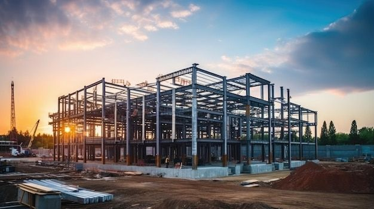

Showcasing our expertise through successful projects

Mumbai – Ahmedabad
The Mumbai-Ahmedabad High-Speed Rail (MAHSR) is India's first high-speed rail corridor being constructed to provide connectivity between Mumbai and Ahmedabad. IMRC was contracted to conduct comprehensive soil investigation at the BKC Bandra section of this prestigious project.
This high-speed rail corridor is designed for trains to operate at speeds of 320 km/h, requiring precise geotechnical understanding of the ground conditions to ensure stability and safety of the infrastructure.
Talcher, Odisha & Chandil Dam, Jharkhand
These innovative floating solar power projects required specialized geotechnical soil investigation to ensure the stability and safety of the floating platforms and associated infrastructure. IMRC conducted comprehensive investigation of the reservoir bed and surroundings to provide critical data for anchoring systems and structural foundations.
Floating solar installations present unique challenges due to variable water levels, bottom conditions, and environmental factors. Our team provided detailed reports that addressed these specific considerations to support successful project implementation.
Pune-Miraj Railway Doubling Project
As part of the Pune-Miraj railway line doubling project, IMRC conducted comprehensive initial and lateral pile load testing for major bridges. This testing was critical to ensure that the bridge foundations could safely support the increased loads associated with additional railway traffic.
The project involved testing multiple bridge piles to verify their performance against design parameters and to confirm compliance with safety standards. Our engineers conducted both vertical and lateral load tests to assess pile capacity under different loading conditions.
Various Locations Across India
IMRC has conducted numerous structural audits and material testing projects for bridges, highways, and commercial buildings across India. These assessments are crucial for determining the current condition of structures, identifying potential safety issues, and planning maintenance or rehabilitation.
Our comprehensive approach combines visual inspection, non-destructive testing, and material sampling to provide a complete picture of structural health. Each project delivers detailed findings and actionable recommendations to ensure continued safe operation of the assessed structures.
Our experienced team is ready to provide customized testing solutions
Discuss Your Project